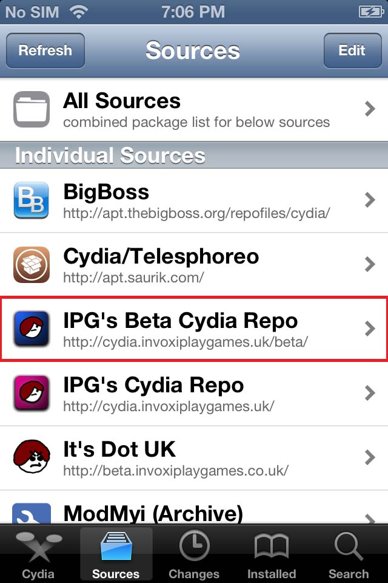
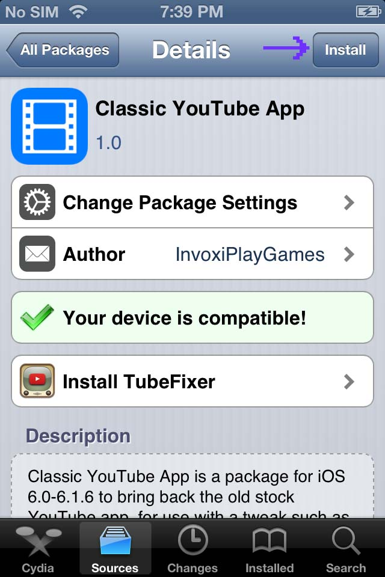
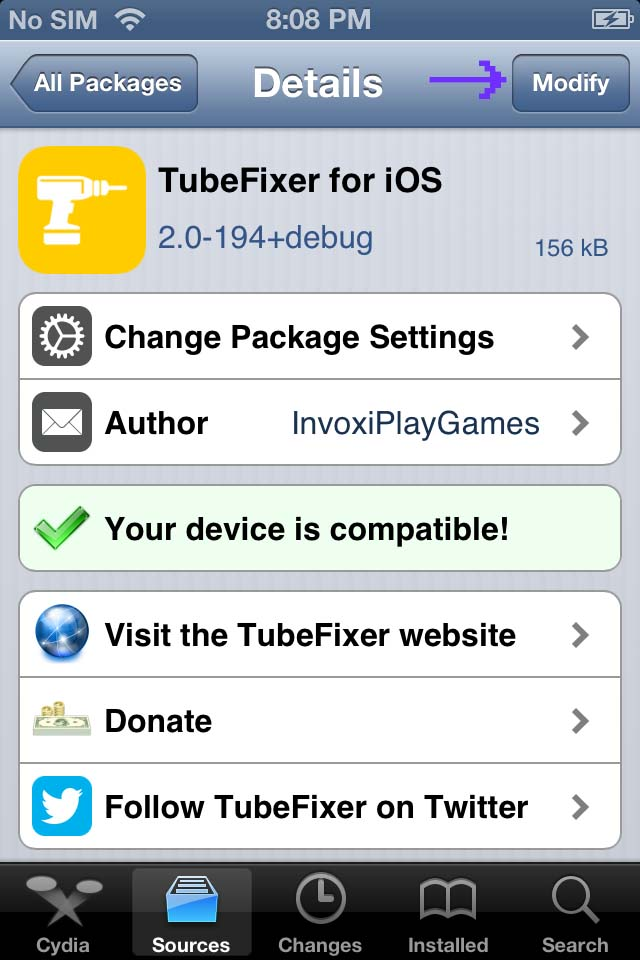
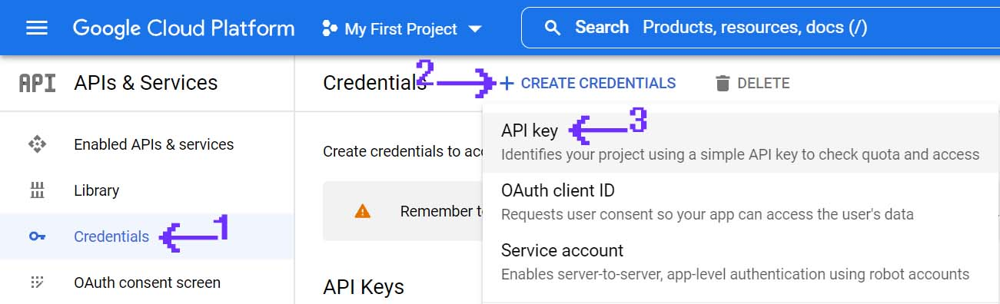
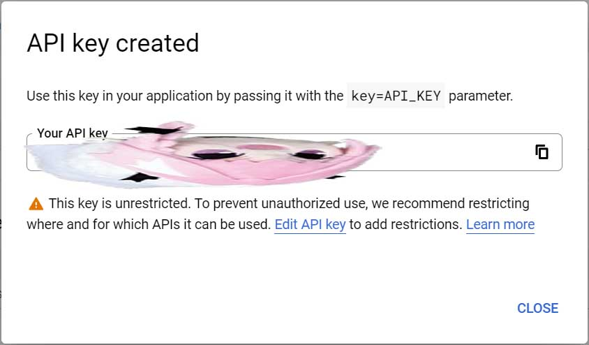
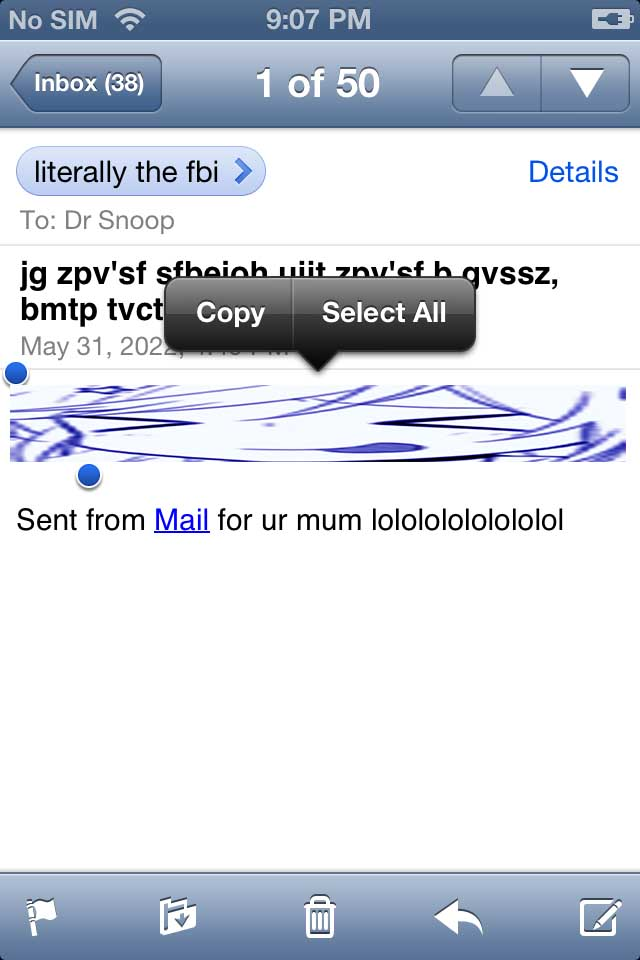
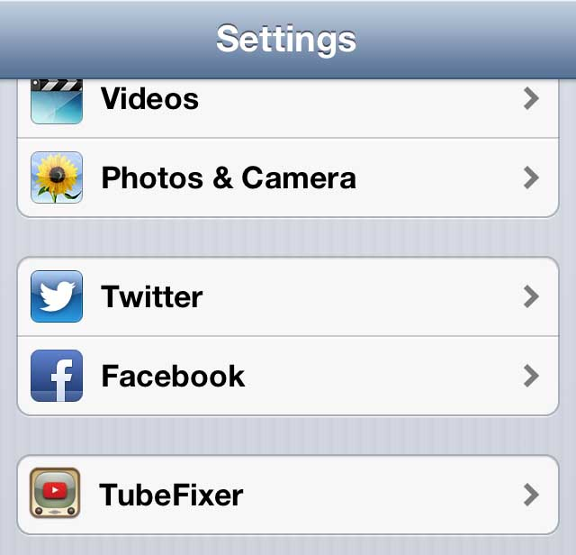
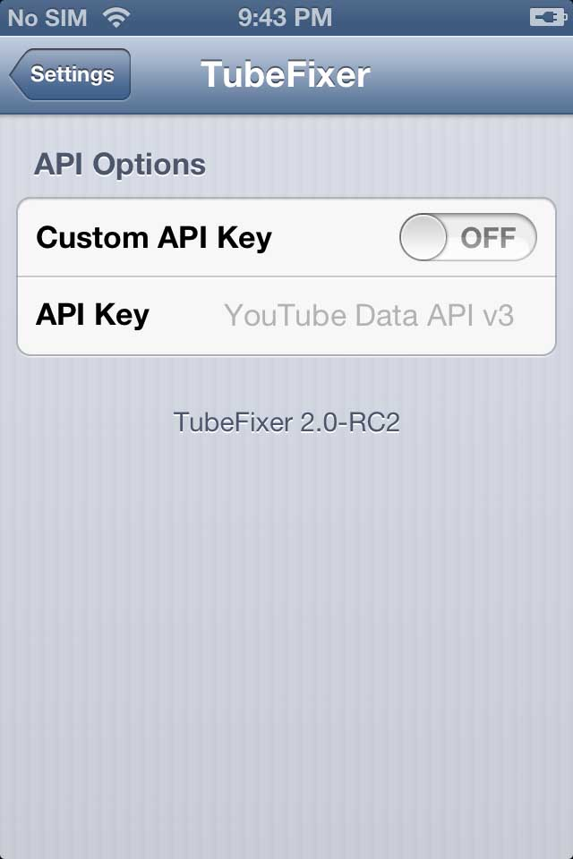
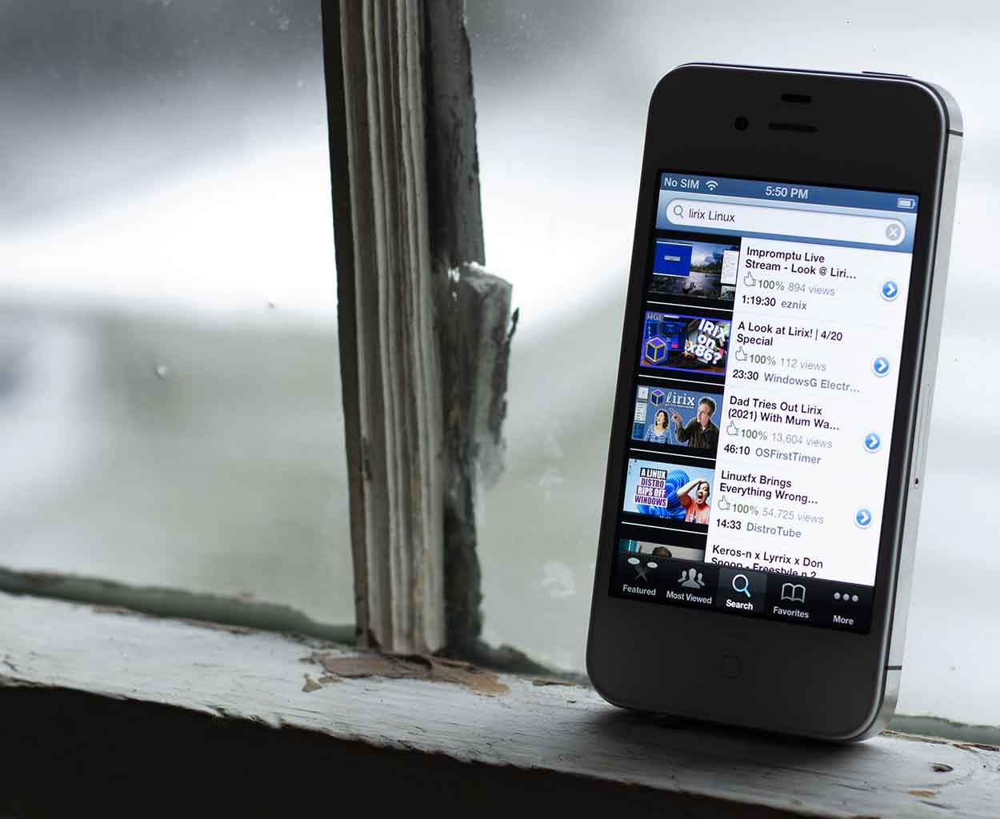

YouTube on iOS 3 through 5, and iOS 6 in 2024.
| Author: Inepsy | |
| Difficulty: LOW | Category: iOS |
| Time Required: 30 Minutes | Index: 001 |
| Published: Jun. 3rd 2022 | Status: Verified |
Introduction
This guide is for ANY jailbroken device running iOS 3, 4, 5, and 6 whether that be officially, dual booted using coolbooter, or OTA downgraded.
NOTICE: This article makes use of a service known as TubeFixer which is a 'Protocol Translator'. Which means user data (such as watched videos, device version, device IP address, device product version, etc) are sent to a 3rd party server not operated by 'SnoopiTek' or 'Google LLC'. While not inherently dangerous (and a requirement to restore YouTube functionality) you should still be aware.
In my testing this service and software or any in this guide have been free from issue.. but..
THIS GUIDE, SOFTWARE, AND SERVICE IS PROVIDED WITH ABSOLUTELY NO WARRANTY.
Prerequisites
- A Jailbroken iOS 3-5 or iOS 6 iDevice with Cydia
- Invoxi's Beta Cydia Repo
- TubeFixer
- Original YouTube App [iOS 6 Only]
Step 1. Invoxi's Cydia Repository
As with most Cydia packages we will need to add a 3rd party repository.
TIP: This website can be loaded on most 'vintage' iOS devices, thus to make things easier if you use the hyperlinks in the prerequisites section they will open directly in Cydia.
To add the repository open 'Cydia' -> 'Sources' -> 'Edit' -> 'Add' a box should pop up asking for a Cyda/APT url, in which input: 'https://cydia.invoxiplaygames.uk/beta'. Once it completes, tap 'Return to Cydia'.

The repo is now successfully added!
Step 2. Restoring the Original Youtube App [iOS 6 Only!]
In iOS 6 because of Google's purchase of YouTube the native app was removed. Luckily due to the hard work of.. someone.. the app from iOS 5 has been ported to iOS 6 and can be installed from the repo added previously.
TIP: Once you add the repository in the prior step, the hyperlinks in the prerequisites section will load directly in Cydia if clicked.
So go to 'Cydia' -> 'Sources' --> 'IPG's Beta Cydia Repo' -> 'All Packages' -> 'Classic YouTube App'.

Once you find that package tap 'Install' -> 'Confirm'.
Then once it completes tap 'Return to Cydia'.
The original YouTube App is now installed!
Step 3. TubeFixer
With the original YouTube App installed (or if you already have it) we must now install the 'Protocol Translator' TubeFixer
TIP: I know im repeating myself but you're too epic to be manually navigating Cydia, to avoid skin callusing the hyperlinks in the prerequisites section will load directly in Cydia. c:
To do so open 'Cydia' --> 'Sources' -> 'IPG's Beta Cydia Repo' -> 'TubeFixer'.

Then click 'Modify' -> 'Install' -> 'Confirm' -> 'Restart SpringBoard'.
TubeFixer is now installed!
Step 4. Acquiring a YouTube API Key
Now with TubeFixer installed to actually use it we need to get a YouTube Data API v3 key. Which while scary sounding its really not that complicated.
Simply go to here. Click 'Enable' then give it a few seconds.
Once it completes click 'Credentials' -> 'Create Credentials' -> 'API Key'.

You should now be visually assaulted by your very own YouTube API Key!

You now have a YouTube Data API Key!
Step 5. 'Installing' The Key into TubeFixer
Now with the key in hand we need to get it onto the iDevice, to do so you can use anything you'd like; I will use email.

Now with the key, copy it into the clipboard then go to 'Settings' -> 'TubeFixer'.

Tap on it then you should see this:

Once you see that menu, switch 'Custom API Key' to ON then paste the key in the box.
Functionality of the original YouTube App should now be restored!
Conclusion
And there you have it (most of) the functionality of the original YouTube App should be restored!~

Oh.. you wanna know about that. Well there are a few features that don't work like commenting, rating, and subscribing because this mobile app was released even before Google+ sign in was a thing.. oh and also shorts dont work.. thank god. But other then that everything else works! :3